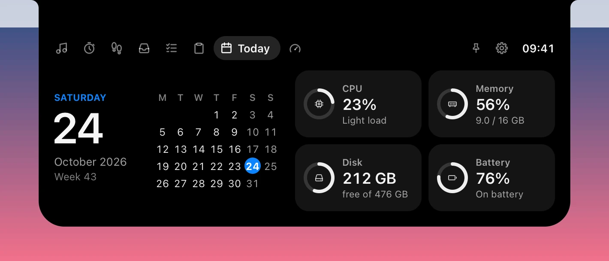
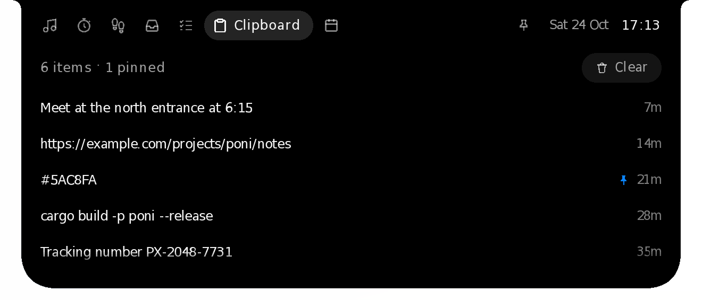
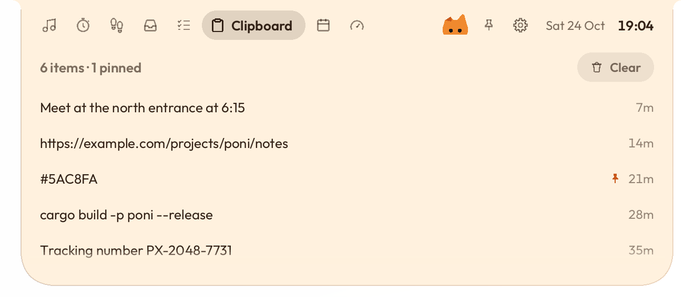
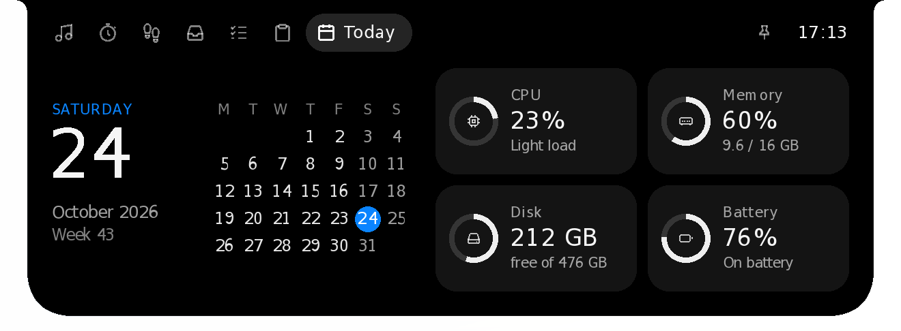
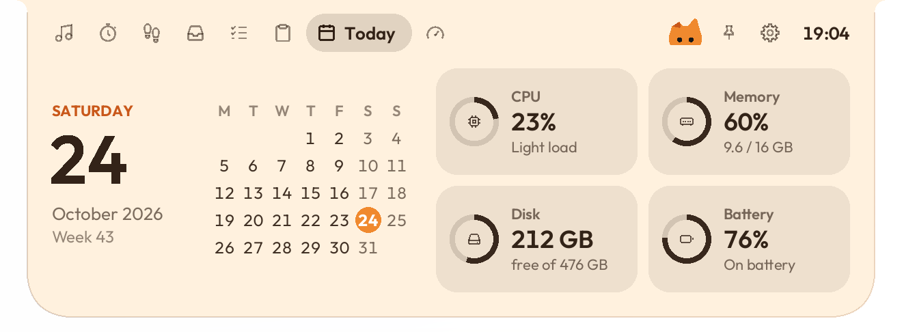
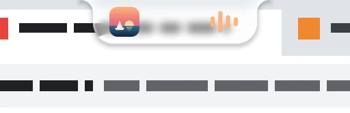

Focus
A Pomodoro timer that keeps counting in the island.


For Windows 10 and 11, and macOS 14 or later
Oyen Poni hangs a small island from the top of your screen. It shows what is happening, and opens into quick pages when you point at it: music with synced lyrics, a focus timer, a file shelf your phone can drop into, tasks, your clipboard and, on Windows, money in and bills due from Oyenza.
Free and open source (MIT) · Windows 6.3 MB, Mac 10.6 MB · No account needed · What's new in 0.1.18

New · Oyen Poni for Mac
On a MacBook with a camera notch, the island lives around it: what's playing sits either side of the camera, and the island opens downward from the notch when you point at it. On a Mac without a notch, or on another display, it hangs from the top of the screen as it does on Windows.




macOS 14 or later, on Apple silicon or Intel. One app for both, 10.5 MB. It isn't signed with an Apple Developer ID yet, so the first time, macOS holds it back until you allow it in Privacy & Security: see Install.
While it rests
Small and quiet at the top edge. It grows only when something needs a moment of your attention, then gets out of the way.


Point at it
Point at the island or click it and it opens; move away and it closes at once. Scroll over the header to switch pages; the gear on the right opens Settings. Sign in to Oyenza and a ninth page joins them.


Controls for whatever is playing: Spotify, Apple Music, YouTube in your browser, or any app that shows up in Windows' media controls. Lyrics scroll in time with the song, from the free LRCLIB library, or Apple Music's own synced lyrics if you have a subscription. YouTube videos find theirs too, even when the title carries subtitle tags or puts the song name first. After an intro or a break, the waiting dots fold away the moment the next line starts. Drag the time bar to jump anywhere in a song: the times follow as you slide, and it jumps when you let go.

New in 0.1.7 · Better Japanese in 0.1.15
Like Apple Music's Show Pronunciation, each word of a lyric line gets its reading in Latin letters, set small underneath: the syllables for Korean, romaji for Japanese and pinyin with tone marks for Chinese. Since 0.1.12 every Japanese line gets romaji on any PC: Oyen Poni reads kanji with its own built-in dictionary, with nothing to install and nothing leaving your PC. Since 0.1.15 it reads closer to how the words are sung: numbers with their counters (二人 futari, 一歩 ippo), は as "wa" after every word (心には kokoro ni wa), and words like 愛おしい and 失くす. Turn it off in Settings or the tray menu.


A Pomodoro timer that keeps counting in the island.

Today's steps against your goal, and your week, from Apple Health or Health Connect on your phone through Oyenza. Signing in works now; the steps come in a later version.


Drop files on the island to keep them handy, or send them from your phone. Click to open, or drag them back out.


A tiny to-do list for the things you'd otherwise forget.


Recent copied text, kept in memory only. It skips anything a password manager marks as private.



The date and calendar, plus CPU, memory, disk and battery at a glance. Click one to open it on the System page.


New in 0.1.17 · An add-on
Today's times as Kemenag RI publishes them for your kab/kota, the next prayer and how long until it, and the qibla. Windows' location finds the nearest of Kemenag's 517 places and checks again when your laptop travels, or you type your city. The point stays on your PC: it only picks the place.
In the ten minutes before each prayer the island counts down, and when it's time it says so, with a short tone, the adzan recorded at Masjidil Haram, or nothing. Checked against Kemenag's 2026 schedule: 98.2% of 227,367 times to the minute, none more than a minute off. Makkah, Madinah and Jeddah use Umm al-Qura.


New in 0.1.17
The + at the end of the tabs lists features that aren't in the download. Switch one on and it downloads then, from this project's releases, each file checked against the fingerprint built into the app. Switch it off and its files are deleted. Prayer times is the first.
New in 0.1.8
Open the Shelf, click Phone and scan the QR code with your phone's camera. Pick photos or files, tap Send, and the island asks before anything arrives. It works with iPhone and Android over your own Wi-Fi: nothing to install on the phone, and nothing goes through the internet. The phone can save what's on your Shelf too.


New in 0.1.14
Click Pair a phone under Phone drop and scan the code once. After that, your phone finds this PC from anywhere: the same Wi-Fi, another Wi-Fi or mobile data, whenever Oyen Poni is running. Files from your own phones go straight onto the Shelf, and the island tells you when they land.
Keep the page on your iPhone's Home Screen, or install it on Android, where Oyen Poni joins the share sheet. The phone and the PC meet through drop.oyenza.com, and the files go straight between them over an encrypted link. Paired phones lists each phone with Remove.


New in 0.1.10
Press the gear beside the pin. Your Oyenza account comes first: sign in, see who is signed in, or disconnect. Below it are the theme, the idle look, switches for lyrics, pronunciation, sounds, clipboard history and starting with Windows, and what the island does in full-screen apps. Changes apply at once.
New in 0.1.11 · Redone in 0.1.17
CPU, GPU, memory, drives, network and battery in rings and charts: each core's load with performance and efficiency cores apart, the graphics card's engines and memory, memory pressure and what fills memory, read, write, download and upload speeds, and the processes using the most. Since 0.1.17 it reads Windows' own kernel counters and keeps the last minute while the page is closed, so the charts are full the moment it opens. No driver, no admin rights, and nothing leaves your PC.


New in 0.1.13
When another window covers the island, such as a browser left on top after full screen or an app set to stay on top, the island goes back on top.
In full-screen games and videos you choose: hide the island, or keep it on top. Right-click the island or open Settings, then In full-screen apps › Hide or Stay on top. Hide is the default. A game in exclusive full-screen mode still covers every window.
New in 0.1.18
While a game fills the screen in borderless full-screen, the island becomes a small readout: frames per second, the graphics card's load and temperature, and the CPU's load, once a second. Hover it and it opens as usual. Switch it on in System › Games, or right-click the island › In full-screen apps › Show FPS, GPU and CPU over games.
Frames are counted the way Intel's PresentMon and Xbox Game Bar count them, from Windows' own log of each frame a game shows. Nothing is loaded into the game, so anti-cheat has nothing to see. DirectX 9 to 12, Vulkan and OpenGL. The first time, Windows asks once for an admin OK, as Game Bar's FPS counter does, and FPS shows from your next sign-in. Nothing runs while no game is in front.


Optional theme · New look in 0.1.7
The island stays black and quiet by default. Switch on the Oyen theme and the whole island turns Oyen: warm cream, dark brown text, his orange on the controls, and Oyen himself peeking over the edge, the same Oyen as in the Oyenza app.


Open the island and press the gear, then Theme › Oyen. Switch back to Classic any time.
Optional theme · New in 0.1.13
Its edge bends and magnifies what's under it, the middle is frosted, a light runs along the rim, and it turns light or dark with what's behind it.




The small island turns light or dark with what's behind it. Open the island and press the gear, then Theme › Glass.
Oyenza account · Live view new in 0.1.17
Sign in with your oyenza.app account the way you sign in on a TV: press the gear, choose Sign in with Oyenza, and approve the code the island shows at oyenza.app/connect. No password is ever typed into Oyen Poni. An Oyenza page then joins the island.
Signing in is optional. This PC gets a key of its own, never your password: it sees your last 7 days of transactions and the bills due, and saves the spends you type: never balances, account numbers, notes or receipts. Disconnect it in the island's Settings, or in oyenza.app under Connected apps.


Private by design
No sign-up and no tracking. Tasks, shelf and focus history are files in your own user folder.
Copied text is never written to disk, and anything a password manager marks private is skipped.
Drawn on your graphics card in step with your screen's refresh rate (60, 144 or 240 Hz). Native Rust, no web view, and nothing drawn while nothing moves. Keeping the System page's last minute takes about a third of a millisecond each second, and the tray menu turns it off.
Install
Oyen-Poni-Setup.exe, from the latest release on GitHub. A portable zip is on the Releases page too.
It installs just for you and needs no admin rights.
Builds aren't code-signed yet, so SmartScreen may say "Windows protected your PC". Choose More info, then Run anyway. If Smart App Control is on, Windows won't run unsigned apps at all; a Microsoft Store version is on the way.
Oyen-Poni-Mac.dmg, from the same release.
Open the DMG and drag Oyen Poni into the Applications folder.
It isn't signed with an Apple Developer ID yet, so macOS warns you the first time you open it. Click Done, then open System Settings › Privacy & Security and click Open Anyway.
%APPDATA%\Poni\
Cache and log: %LOCALAPPDATA%\Poni\
Uninstalling removes the app, cache and log, and keeps your data.
On a Mac, your data: ~/Library/Application Support/Poni/
Mac log: ~/Library/Logs/Poni/